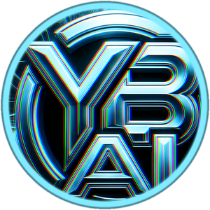
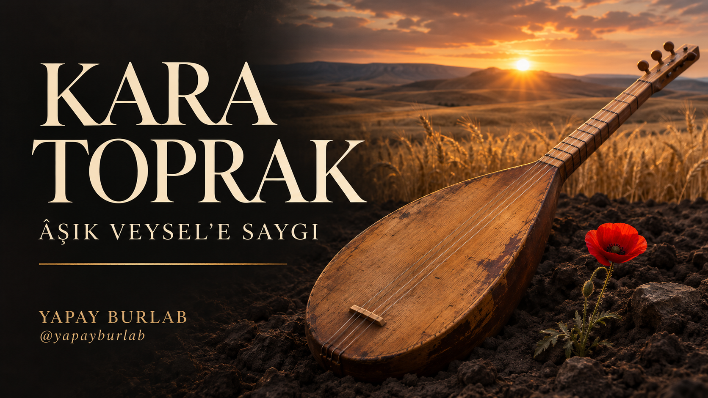

Yapay BurLab · 3 Kasım 2026 · TOPRAK rehberi
Bir sazın sesiyle açılıp gün doğumuna uzanan 81,68 saniyelik klibin yapım süreci. Burada kullanılan sahneler tarihî olayların belgesi değil, sanatsal canlandırmalardır. Atatürk’ün görüntüsü ve şarkılı performansı yapay zekâ ile oluşturulmuştur; gerçek tarihî ses kaydı değildir.
Bu projede pek çok ses denemesinin ardından kullanıcı tarafından seçilen 75,8 saniyelik kayıt temel alındı. Görüntü üretimi başlamadan önce kelime sonlarını, nefesleri ve müzik kapanışını kontrol ettik. Son kurguda yeni bir ses modeli üretmedik; seçilen vokali kullandık.
Senin başlangıç dosyaların: kullanma hakkına sahip olduğun bir şarkı kaydı, mümkünse ayrı vokal ve enstrümantal eşlik, aynı karaktere ait net portreler. Kendi sesinle çalışıyorsan temiz doğal kayıtlar kullan. Kayıt uzunluğu tek başına ses benzerliği garantisi değildir.
İlk denemeyi kısa tut. Tam üretime geçmeden anlaşılır kelimeleri, hedeflediğin tınıyı ve müzikle uyumu normal hızda dinle. Biz 8 saniyelik bir dudak eşleme denemesiyle başladık.
Ana kayıt 0–20, 20–40, 40–60 ve 60–75,8 saniye olarak bölündü. Son parça 15,8 saniyedir. Ses dosyalarının başına ayrı sessizlikler eklenmedi; her parça ana kaydın tam ilgili kesitidir.
OpenArt’ta Creatify Aurora Pro dudak eşleme akışında her parçaya uygun bir portre ve kendi ses kesiti verildi. İlk bölüm karargâhta sazlı orta plan, orta bölümler yakın performans, son bölüm sıcak ışıklı portre olarak kuruldu. Bu model ve bölme düzeni bu projede kullanılan ayarlardır; her hesapta aynı seçeneklerin bulunacağı anlamına gelmez.
Kontrol: ilk kelime, çene ve dişler, uzun ünlüler, göz kırpmalar ve son hece. Ağız sessiz kalıyorsa yalnız teknik senkron ölçümüne güvenme; o aralığı ara planla ört veya performansı yeniden değerlendir.
Saz: müziğin kaynağı. Yağmurdaki toprak: temas ve bağlılık. Kağnıya yaslanan kadın: emek. Toprağa dayanan asker: mücadele. Gelincik: yaşamın devamı. Buğday: bereket. Gün doğumundaki ufuk: umut.
Bu anlamlar filmin sanatsal yorumudur. Sahnelere gerçek tarih, gerçek olay veya arşiv iddiası yüklenmedi. Yüz planı söyleyişi taşır; ara plan duyguyu somutlaştırır.
Görseller kullanıcı tarafından Gemini/Flow tarafında hazırlandı. Ara planların hareketlendirilmesinde Flow’daki Omni 1.1 Flash kullanıldı. Çoğu kaynak 8 saniye; kullanıcı tarafından ayrıca sağlanan asker planı 6 saniyedir. Son kurguda kaynakların yalnız uygun bölümleri kullanıldı.
Uygulama sırası: doğru görseli başlangıç karesi olarak ekle, sahneye ait hareket istemini gir, model/süre/oranı kontrol et, tek deneme üret, sonucu incele. Bir planda tek temel hareket iste. Örneğin kadını hem yürütüp hem kağnıyı döndürmek yerine beden temasını sabit tutup nefes ve kar hareketi kullanmak daha denetlenebilir bir seçimdir.
Üretim reddedilirse güvenlik kontrolünü aşmayı deneme. Sahneyi yeniden planla veya mevcut uygun bir plan kullan. Bu projede bir üretim isteği reddedildi; daha sonra kullanıcının sağladığı mevcut asker videosu kurguya alındı.
Ana ses tek katmanda kalır. Üretilen videoların sesleri kapatılır. Performans kaynağı kendi zamanında durur; ara görüntü geldiğinde alttaki şarkının saati ilerlemeye devam eder.
Örnek: ana şarkının 25. saniyesi, ikinci 20 saniyelik performansın 5. saniyesidir. Son sürümde 1,88 saniyelik müzik girişi bulunduğu için bu an klibin 26,88. saniyesine taşınır. Görüntüyü öne veya geriye kaydırıp ağzı şarkıdan koparma.
Ara planlarda yaklaşık 160 milisaniyelik kısa geçişler kullanıldı. Uzun yüz erimeleri yerine sade kesmeler tercih edildi. Yüzün dinlendiği bazı aralıklar ara görüntülerle örtüldü; uzun kesintisiz ön yüz planları kısaltıldı.
Bu projenin en çok düzeltilen noktası girişti. Önce girişe yalnız süre eklemek denendi; kullanıcı ilk sözün hâlâ sert geldiğini belirtti. Son çözümde kayıttaki belirgin saz vuruşunun hemen öncesinden başlanarak vuruşun başı korundu.
Bu kayda özel son ayarlar: 1,88 saniye enstrümantal giriş; giriş müziğinde yaklaşık +4,5 dB vurgu; vokal yaklaşırken 1,15 saniyelik yumuşak geri çekilme. İlk 0,45 saniyelik vokal -2,5 dB’den normal seviyesine gelir. Kelimenin ilk hecesi kesilmedi, vokalin perdesi ve hızı değiştirilmedi. Bu değerler her şarkıya uygulanacak reçete değildir; kendi kaydında dinleyerek ayarla.
Sadece elindeki tek birleşik dosyanın başını kısmak, sazı da kısar. Ayrı eşlik varsa vokal ve müzik seviyelerini ayrı düzenle. Elindeki stem’in gerçekten aynı miks ve zamanlamaya ait olduğunu doğrula. Sayısal ölçüm, kulağın yerine geçmez.
Son vokal 75,68. saniyede biter. Ardından aynı eşlik kaydından 6 saniye müzik devam eder. Son 2,8 saniyede ses kademeli söner; görüntü son 1,2 saniyede kararır. Toplam süre 81,68 saniyedir.
Finalde sırttan görülen kişi ve genişleyen ufuk kullanıldı. Kaynağa küçük bir yavaşlatma uygulandı; sessiz bir portreyi dondurmak yerine manzaranın doğal hareketi korundu. Klibin sonuna yazı eklenmedi; marka kapak ve paylaşım metinlerinde yer alır.
| Klip zamanı | Plan |
|---|---|
| 0–2,00 | Saz detayı; ilk söz 1,88’de başlar |
| 2,00–7,08 | Sazlı performans |
| 7,08–9,88 | Saz ara planı |
| 12,28–16,28 | Sisli tepe |
| 19,68–24,48 | Kadın ve kağnı |
| 28,28–33,80 | Toprağa dayanan asker |
| 36,28–39,48 | Gelincik |
| 41,80–46,72 | Ateş ve saz |
| 49,88–53,08 | Elde toprak |
| 57,48–62,20 | Gelincik |
| 65,88–71,80 | Buğday tarlası |
| 73,48–81,68 | Gün doğumu; müzik kapanışı |
Tabloda gösterilmeyen aralıklarda zamanına uygun performans görüntüsü devam eder.
Aşağıdakiler projenin kayıtlı hareket planından alınmıştır. Her alanın sağlayıcıya aynen aktarıldığına ilişkin eksiksiz bir işlem kaydı değildir; kendi görseline uyarlamak için örnek olarak kullan. İstemle çıktı arasında fark olabilir. Örneğin el-toprak kaynağında ışık çakması görülmesi, istemin tüm kısıtlarının gerçekleştiği anlamına gelmediğini gösterir.
Very slow lateral camera drift, keeping the solitary man at approximately the same size in frame. He stays planted in place, looking over the valley. A light breeze moves only the lower edge of his coat; distant mist drifts slowly across the valley. Preserve the original horizon, telegraph poles, face and body proportions. No walking, no orbit around the face, no new figures.Keep the woman and wooden cart in their exact positions. Show subtle breathing and the physical effort in her shoulders while fine snow drifts past. Her existing hand and forehead contact with the cart must remain anatomically stable. Extremely gentle camera push. Do not make her walk, do not rotate wheels, do not uncover or alter the cargo, do not melt snow or change the weather within the shot.Locked macro composition of the existing red poppy. A very light breeze produces one small natural sway of the stem and petals, then it gently settles. Roots remain fixed in the soil; dew stays physically plausible. Preserve petal count and silhouette, with constant warm light. No blooming animation, no rapid plant growth, no floating droplets or magical glow.Keep the instrument geometry, strings, bridge and hand anatomy identical to the source. The right hand makes one small controlled plectrum stroke across the strings and settles just above them. The camera is fixed. Small natural embers rise in the background; the fire stays behind the instrument without touching it. No repeated rapid strumming, no large wrist rotation, no changing finger count, no warping strings.Slow low forward camera glide along the existing boundary between dark soil and mature wheat. The wheat and poppies sway gently in a consistent breeze. Preserve the original landscape and distant mountains, with steady golden sunlight. No instantaneous seasonal transformation, no growing crops, no new mountains, no dramatic cloud eruption. End on the warm wheat texture.Begin with the exact rear-view composition. The man remains still, looking toward the horizon, hands and coat unchanged. The camera rises slowly by a modest amount, maintaining the figure in the lower central frame and revealing a little more of the existing valley. Subtle natural grass movement, steady sunrise. Animate distant birds only if already present in the source, otherwise add none. No face reveal, no large drone flight, no new terrain. Finish in a calm stable composition suitable for a fade to black.Teslim: dikey 720 × 1280, 25 kare/saniye, H.264 video ve AAC ses. Son sürüm kullanıcı tarafından onaylandı. Dosyanın tamamı teknik olarak çözümlendi; örnek kareler incelendi. Bu işlemler her hecede kusursuz dudak uyumu veya viral başarı kanıtı değildir.
Kendi klibini telefonda baştan sona dinle: ilk hece tam mı, sazla giriş doğal mı, yüz sessiz kalıyor mu, kelime ortasında kesme var mı, ses iki kez çalıyor mu, kapanış yeterli mi? Kapaktaki yazıyı küçük ekran ve uygulama kırpmasıyla ayrıca kontrol et.
Gerçekçi AI canlandırmasını paylaşım açıklamasında ve platformun ilgili yükleme alanında belirt. Kullanılan şarkı ve kayıt haklarını ayrıca kontrol et. Bu klip bir dakikadan uzun: YouTube’a göre bir dakikadan uzun Shorts’ta aktif telif talebi varsa video dünya genelinde engellenir. Yükleme denetimini yayın öncesinde incele.
Kaynaklar: YouTube Shorts süre ve müzik kuralları · YouTube AI açıklaması · Flow · OpenArt
Daha çok görüntü, daha iyi kurgu demek değil. Önce şarkının girişini ve çıkışını oturt; sonra yüz ve ara planları gerçek söyleyişe göre yerleştir. Tek bir uzun yüz planı kadar, sürekli değişen görüntüler de dikkati dağıtabilir. Her kesmenin şarkıda bir nedeni olsun.
Sinematik klipler ve adım adım yapılışları: @yapayburlab
Yapım ve kurgu: Yapay BurLab Fabrikası
İş birliği: yapayburlab@hotmail.com